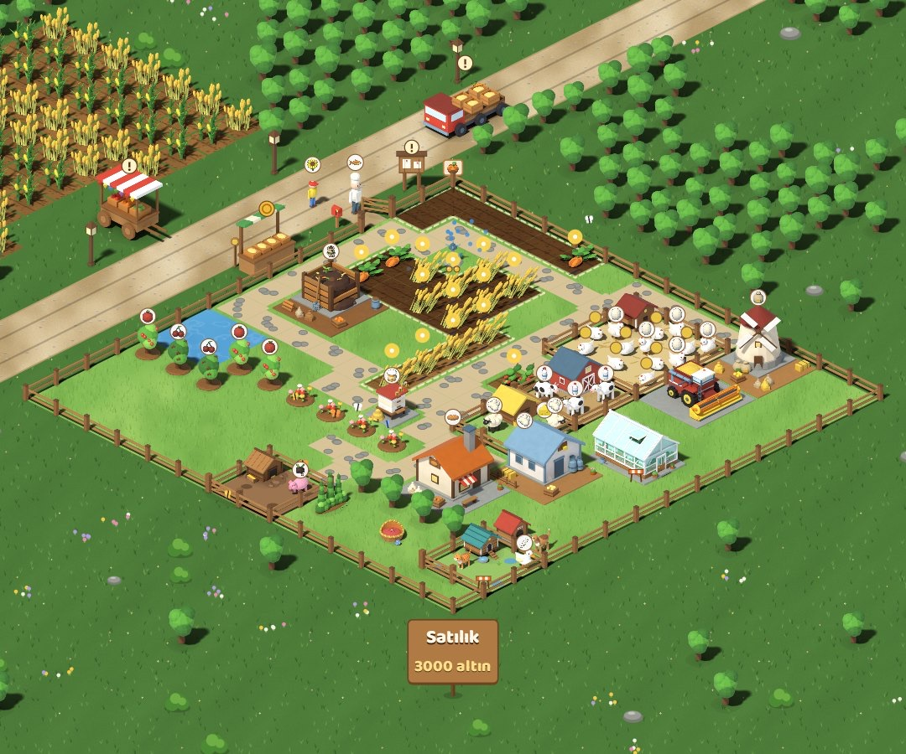

01 · OYUNGAME
PocketFarm
Cebinde küçük bir çiftlikA small farm in your pocket
Toprağı sür, tohum ek, hayvanlarına bak, fırında ekmek pişir. Köylüler kapına gelir, akşam fenerler yanar; çiftlik sen yokken de büyür.Till the soil, plant seeds, look after your animals, bake bread. Villagers come to your gate, lamps light up at dusk, and the farm grows while you're away.
- iOS
- Android
- Mac
- App Store'daOn the App Store
